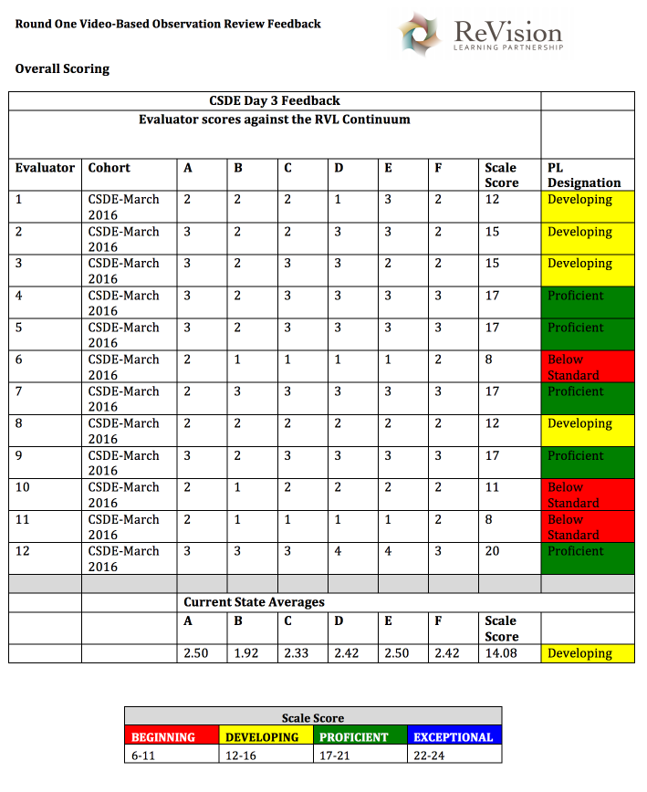
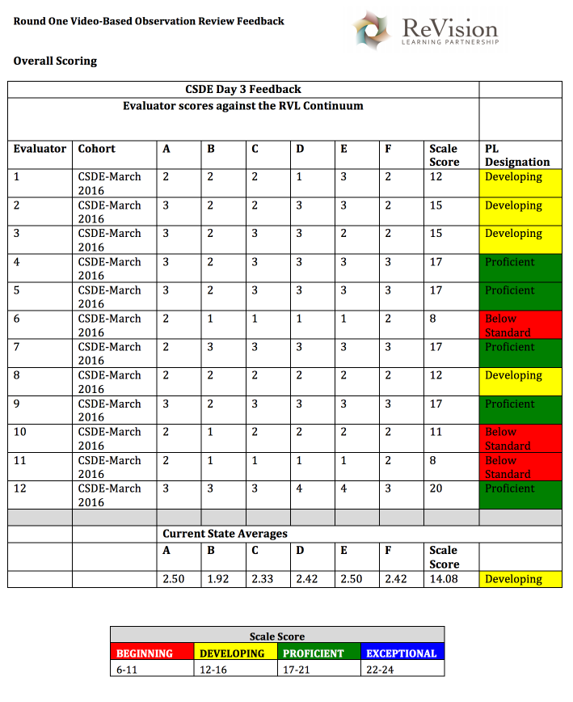

Our Team
Working with You to Rethink Teacher Evaluation

Patick Flynn
Founder, Lead Sales and Marketing
In his 20 years of educational service, Patrick Flynn has been a teacher, teacher leader, curriculum director and executive program director in K-12 settings in over ten different states.
As the Executive Director of High Schools for Edison Schools and the Chief Academic Officer for Great Schools Workshop in Sacramento, CA, Patrick worked with building and district administrations in nine states to implement systemic high school reform. Patrick founded and currently leads ReVision Learning Partnership, LLC, providing professional development and support to districts and educational organizations in CT, NY, NJ, and LA and has consulted on school improvement initiatives internationally in the United Arab Emirates with the Abu Dhabi Education Council.
As the Executive Director of ReVision Learning Partnership, Patrick and his team have provided school improvement services in over 40 CT districts.

J. Gregory McVerry
Founder, Lead Designer
Our three decades of experiences as educators, experience in professional development, and the hundreds of teachers we have evaluated gives us the experience to help your district rethink teacher evaluation.


 
